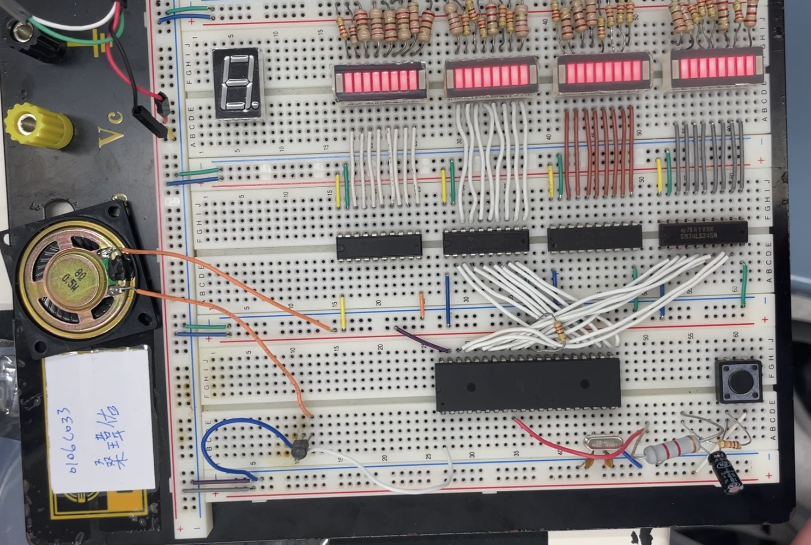

02 / Portfolio
重點專案與實作

Kotlin
Android 室內慣性導航系統
利用手機內的加速度計與陀螺儀，實作計步器、移動距離測量以及 2D 軌跡繪製功能。

硬體電路
類比與數位通訊系統實驗
專注於 AM, DSB, FSK, PSK 及 TDM 等調變解調電路的設計、實作與量測分析。

Assembly
8051 微處理機實作專案集
包含揚聲器音樂播放、七段顯示器與 LED 陣列控制。 | Music player, 7-segment display.

YOLO
Edge AI
無人機即時監控系統開發
碩士班研究規劃，預計利用邊緣運算平台部署 YOLO 演算法，實現無人機端的即時物件偵測與環境監控。